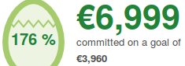

MathML in
Web Engines
Web Engines Hackfest 2015
Frédéric Wang, AcceSciTech Project
About Me
- Engineer for the AcceSciTech Project
- Since 2007: Mozilla contributor
- In 2014: WebKit / Gecko Crowdfunding 
What is MathML?
- W3C Recommendation - ISO/IEC standard
- OpenDocument, EPUB, Daisy, HTML5
- Web pages, Web Apps, email...
MathML & HTML5
Boring MathML Example
Text Layout
Bidi
<math dir="rtl">...</math>
CSS
math {
font-family: TeX Gyre Bonum Math;
}
mfrac > *:first-child {
color: blue;
}
DOM / Javascript
math.setAttribute("rtl", ...)
SVG
<foreignObject ... >
<math> ... </math>
</foreignObject>
Shadow Tree / Web Components
<x-tex display="block">
\Gamma(t) =
\frac{1}{t} \prod_{n=1}^\infty
\frac{\left(1+\frac{1}{n}\right)^t}{1+\frac{t}{n}} =
\frac{e^{-\gamma t}}{t} \prod_{n=1}^\infty
\left(1 + \frac{t}{n}\right)^{-1} e^{\frac{t}{n}}
</x-tex>
Current Issues
- Math Users: need cross-compatible solution
- Browser Vendors: math rendering is not a priority
- Math WG: not focused on web engines
"MathML" Association
Mondial Association for Tools Handling MathML, Ltd
- Individuals and companies
- Experts and consulting companies
- "MathML in HTML5" implementation note & test suite.
"MATH" table
Overview
- ISO/IEC Open Font Format 3
- Operating systems
- Web Engines
"MathVariants" subtable
"MathVariants" subtable
"MathConstants" subtable
"MathConstants" subtable
"MathGlyphInfo" subtable
"MathGlyphInfo" subtable
VS
Roadmap
- Math fonts everywhere!
- "MathML in HTML5": document and tests
- WebKit: code refactoring
- Blink: import WebKit's implementation
- Gecko: clean up
- Servo: new implementation
¿Preguntas?
fredw (fred@wang.free.fr)
www.mathml.us
{kind=link}